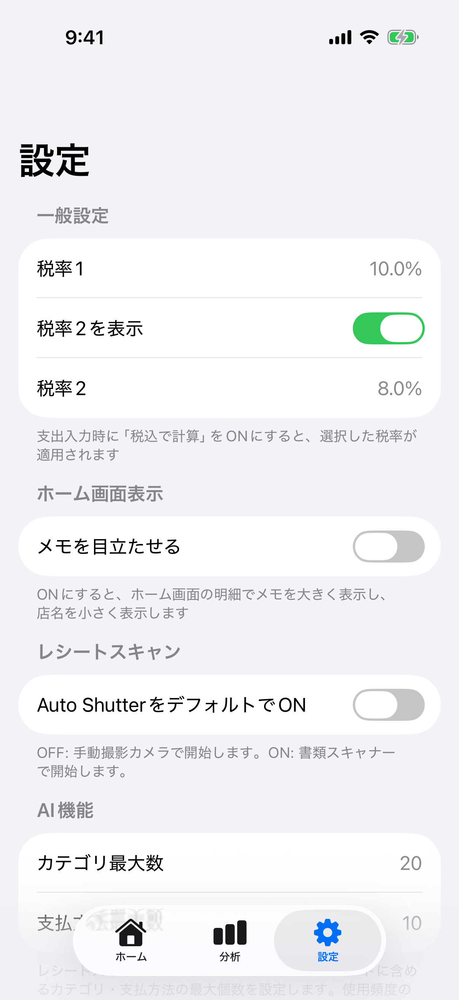
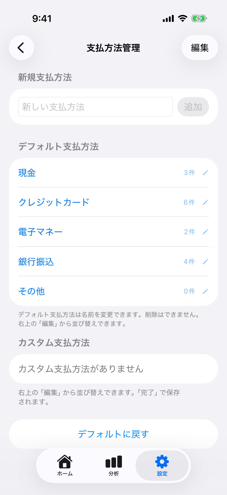
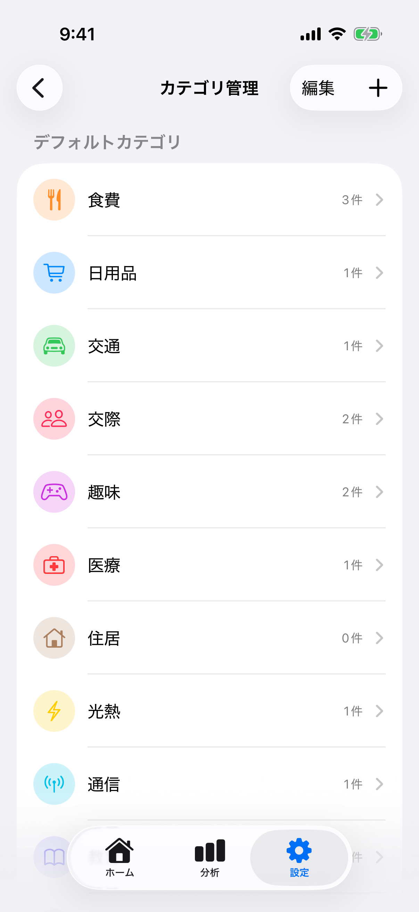
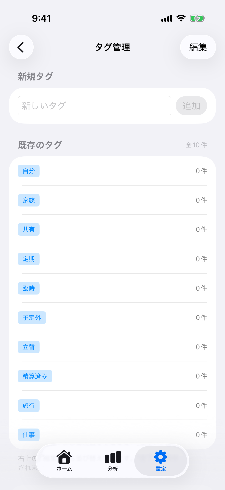
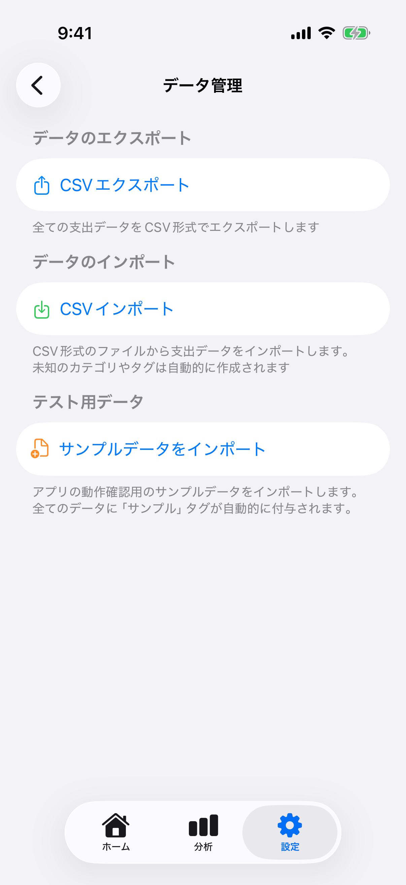

設定機能の使い方
設定機能の使い方¶
設定画面の概要¶
設定画面では、税率・カテゴリ・支払方法・タグの管理や、データのインポート/エクスポートなどを行えます。

税率設定¶
支出入力時の税込計算に使用する税率を設定できます。
設定方法¶
1. 設定画面を開く
画面下部の「設定」タブをタップ
2. 税率をタップ
一般設定セクション → 「税率」をタップ
現在の税率が表示されます（デフォルト: 10.0%）
3. 新しい税率を入力
ダイアログが表示されます
例: 10 （10%の場合）
8 （8%の場合）
4. 保存をタップ
新しい税率が保存されます
次回から支出入力時の税込計算に反映されます
税率の適用例¶
| 設定税率 | 税抜価格 | 税込価格 |
|---|---|---|
| 10% | 1,000円 | 1,100円 |
| 8% | 1,000円 | 1,080円 |
| 5% | 1,000円 | 1,050円 |
注意事項: - 税率は0〜100%の範囲で設定できます - 既存の支出には影響しません（新規入力時のみ適用） - 軽減税率など複数の税率を使い分ける場合は、都度設定を変更してください
ホーム画面表示設定¶
メモを目立たせる¶
ホーム画面の支出一覧で、メモの表示を強調できます。
| 設定 | 説明 |
|---|---|
| OFF（デフォルト） | 店名が目立つ表示、メモは小さく表示 |
| ON | メモが目立つ表示、店名は小さく表示 |
設定方法: 1. 設定タブ → 「ホーム画面表示」セクション 2. 「メモを目立たせる」トグルをオン/オフ
レシートスキャン設定（iOS専用）¶
Auto Shutter のデフォルト設定¶
レシートスキャン起動時のカメラモードを選択できます。
| 設定 | 説明 |
|---|---|
| OFF（デフォルト） | 手動シャッターカメラで起動 |
| ON | 書類スキャナー（Auto Shutter）で起動 |
設定方法: 1. 設定タブ → 「レシートスキャン」セクション 2. 「Auto ShutterをデフォルトでON」トグルをオン/オフ
AI機能（Apple Intelligence / ローカルAIモデル）¶
本アプリのAI機能（レシートの自動読み取り補完、貯金箱ナビキャラクターによる明細検索・マニュアル質問）は、次の2つのエンジンのどちらかで動きます。
| エンジン | 特徴 | 対応 |
|---|---|---|
| Apple Intelligence | OSに内蔵されたAI。追加ダウンロード不要で軽快。 | iPhone 15 Pro 以降 / M1 以降の iPad など対応端末 |
| ローカルAIモデル | 任意でダウンロードする高精度AI。レシートは画像を直接解析。 | 別途ダウンロードが必要（約3.0GB） |
どちらのエンジンも推論はすべて端末内で行われ、データが外部に送信されることはありません。
AI機能をONにする / 現在のエンジンを確認する¶
1. 設定タブ →「AI機能」セクションを開く
このセクションは、Apple Intelligence 対応端末、またはローカルAIモデルを導入済みの端末で表示されます。
2. 「AI機能を使う」をON
ONにすると、レシートの自動補完とナビキャラクターの検索アシスタントが有効になります。
3. 「現在のAIエンジン」を確認
いま実際に使われているエンジンが表示されます。
- Apple Intelligence … OS内蔵AIを使用中
- ローカルAIモデル … ダウンロードしたAIを使用中
- オフ … AI機能を使っていない（「AI機能を使う」がOFF、または利用可能なエンジンなし）
どちらのエンジンを使うかは、後述の「ローカルAIモデル」画面で切り替えられます。ローカルAIモデルを導入していない場合は Apple Intelligence が使われます。
AIプロンプトの詳細設定¶
AIプロンプトで使用するカテゴリと支払方法の最大数を設定できます。
| 設定 | 説明 | デフォルト |
|---|---|---|
| カテゴリ最大数 | AIプロンプトに含めるカテゴリの最大数 | 20 |
| 支払方法最大数 | AIプロンプトに含める支払方法の最大数 | 10 |
設定方法: 1. 設定タブ → 「AI機能」セクション 2. 数値をタップして変更
注意: 使用頻度が高いものから順にプロンプトに含まれます。
ローカルAIモデル¶
Apple Intelligence の代わりに使える、より高精度なAIモデルを任意でダウンロードできます。レシート解析では、OCRの文字認識だけに頼らず、レシートの画像そのものをAIが直接読み取るため、複雑なレシートや細かい明細の読み取り精度が向上します。
モデルについて¶
| 項目 | 内容 |
|---|---|
| モデル | Qwen3-VL 4B（マルチモーダルAI、日本語対応） |
| ライセンス | Apache License 2.0 |
| ダウンロードサイズ | 約3.0GB |
| 動作 | すべて端末内で完結（データは外部送信されません） |
ダウンロード手順¶
1. 設定タブ →「ローカルAIモデル」を開く
「AI機能」の下にある「ローカルAIモデル」をタップ
2. 「モデルをダウンロード」をタップ
サイズ・Wi-Fi推奨の確認ダイアログが表示されます
3. ダウンロード完了を待つ
進捗バーで状況を確認できます
完了後、自動的にダウンロードの検証（整合性チェック）が行われます
ダウンロードが完了すると、AIエンジンが自動的に「ローカルAIモデル」に切り替わります。
ヒント: サイズが大きいため、Wi-Fi接続でのダウンロードを強く推奨します。空き容量が不足している場合はダウンロードできません。
エンジンの切り替え¶
ローカルAIモデルを導入済みの場合、「ローカルAIモデル」画面の「使用するAIエンジン」で、Apple Intelligence とローカルAIモデルをいつでも切り替えられます。切り替えた結果は、設定の「現在のAIエンジン」に反映されます。
モデルの削除¶
不要になった場合は、「ローカルAIモデル」画面の「モデルを削除」でダウンロードしたファイルを削除できます。削除すると自動的に Apple Intelligence に戻ります（対応端末の場合）。
- モデルは
LocalLLMフォルダに保存され、iCloudバックアップの対象外です。 - アプリのアップデートでより新しいモデルに更新された場合、古いモデルは起動時に自動的に削除され、二重に容量を使うことはありません。
検索アシスタント（検索インデックスの再生成）¶
貯金箱ナビキャラクターの「意味検索（自然な言葉での支出検索）」で使うベクトル検索インデックスを管理します。この項目はApple Intelligenceに対応した端末でのみ表示されます。
インデックスは自動で更新されます¶
インデックスは手動で毎回再生成する必要はありません。アプリの起動時に、明細の追加・編集・削除を自動で検出してインデックスに反映します（バックグラウンドで実行）。
- 新しく登録した明細 → 自動で検索対象に追加されます
- 内容を編集した明細 → 自動で更新されます
- 削除した明細 → 自動でインデックスから除かれます
ただし、反映は起動時のまとめて同期で行われます。明細を登録した直後の同じ起動中は、その明細がまだ意味検索の対象に含まれていない場合があります。その場合はアプリを起動し直すと反映されます。
「検索インデックスを再生成」を使う場面¶
「検索インデックスを再生成」ボタンは、既存のインデックスをすべて削除してゼロから作り直す完全リビルドです。日常的に使う必要はなく、次のような場合のリカバリ用です。
- 意味検索の結果が明らかにおかしいとき
- 大量の明細を一括編集・インポートした直後にすぐ反映させたいとき
明細数が多いと再生成に数十秒かかる場合があります。
支払方法管理¶
支払方法を追加・編集・並び替えして、自分の使い方に合わせたカスタマイズができます。

デフォルト支払方法¶
アプリには5種類のデフォルト支払方法が用意されています：
• 現金 • クレジットカード
• 電子マネー • 銀行振込
• その他
できること: - ✅ 名前の変更 - ❌ 削除（できません）
カスタム支払方法の作成¶
手順: 1. 設定タブ → 支払方法管理 2. 支払方法名を入力フィールドに入力 3. 「追加」ボタンをタップ
例:
• PayPay • 楽天カード
• Suica • LINE Pay
支払方法の並び替え¶
手順: 1. 「編集」ボタンをタップ 2. ドラッグ&ドロップで順序を変更 3. 「完了」ボタンをタップして保存
支払方法の削除¶
カスタム支払方法のみ削除できます。
手順: 1. 支払方法管理画面でカスタム支払方法を左にスワイプ 2. 削除ボタンをタップ
並び順のリセット¶
手順: 1. 「デフォルトに戻す」ボタンをタップ 2. 確認ダイアログで「リセット」を選択 3. 初期状態の並び順に戻ります
カテゴリ管理¶
カスタムカテゴリを作成・編集して、自分好みの分類ができます。

デフォルトカテゴリ¶
アプリには14種類のデフォルトカテゴリが用意されています：
• 食費 • 外食 • 交通
• 趣味 • 日用品 • 衣服
• 美容 • 医療 • 教育
• 通信 • 光熱費 • 住居
• 保険 • その他
できること: - ✅ 名前の変更 - ✅ アイコンの変更 - ✅ 色の変更 - ❌ 削除（できません）
手順: 1. 設定タブ → カテゴリ管理 2. デフォルトカテゴリから編集したいカテゴリをタップ 3. 名前・アイコン・色を変更 4. 保存ボタンをタップ
カスタムカテゴリの作成¶
自由にカテゴリを追加できます。
手順: 1. 設定タブ → カテゴリ管理 2. 右上の「+」ボタンをタップ 3. 名前を入力 (必須) 4. アイコンを選択 (85種類から選択) 🆕 5. 色を選択 (カラーピッカーから自由に選択) 6. プレビューで確認 7. 保存ボタンをタップ
アイコンの種類 🆕¶
8つのカテゴリに分類された85種類のアイコンから選択できます：
選択方法: 1. カテゴリエディター画面で「アイコン」行をタップ 2. カテゴリ別に整理された85種類のアイコンが表示 3. 好きなアイコンをタップして選択 4. 自動的に前の画面に戻る
カスタムカテゴリの削除¶
注意: 削除するカテゴリに紐づく支出がある場合は削除できません。
手順: 1. カテゴリ管理画面でカスタムカテゴリを左にスワイプ 2. 削除ボタンをタップ 3. 確認ダイアログで「削除」を選択
カテゴリの並び替え¶
手順: 1. 「編集」ボタンをタップ 2. ドラッグ&ドロップで順序を変更 3. 「完了」ボタンをタップして保存
カテゴリの並び順リセット¶
手順: 1. 「デフォルトに戻す」ボタンをタップ 2. 確認ダイアログで「リセット」を選択 3. 初期状態の並び順に戻ります
タグ管理¶
支出にタグを付けて、より細かく分類できます。

タグの作成¶
手順: 1. 設定タブ → タグ管理 2. 「新しいタグ」フィールドにタグ名を入力 3. 「追加」ボタンをタップ
例:
• 外食
• コンビニ
• 必需品
• ぜいたく品
• プレゼント
• 仕事関連
支出へのタグ付け¶
タグは支出の登録・編集時に追加できます。
手順: 1. 支出登録画面で「タグ（任意）」セクションを表示 2. 検索フィールドにタグ名を入力 3. 既存タグをタップして選択、または新規作成 4. 複数のタグを選択可能 5. 選択したタグは青いバッジで表示
タグの削除¶
手順: 1. タグ管理画面でタグを左にスワイプ 2. 削除ボタンをタップ
注意: タグを削除しても、紐づく支出は削除されません。支出からタグの関連付けのみが解除されます。
タグの並び替え¶
手順: 1. 「編集」ボタンをタップ 2. ドラッグ&ドロップで順序を変更 3. 「完了」ボタンをタップして保存
タグの並び順リセット¶
手順: 1. 「デフォルトに戻す」ボタンをタップ 2. 確認ダイアログで「リセット」を選択 3. 初期状態の並び順に戻ります
カレンダー状態¶
カレンダーに表示する「状態」を追加・削除できます。状態は日付ごとに設定でき、凡例にも表示されます。
追加手順: 1. 設定タブ → カレンダー状態 2. 状態名を入力 3. 色を選択 4. 「追加」をタップ
削除手順: 1. 状態一覧で左にスワイプ 2. 削除ボタンをタップ
注意: 状態を削除すると、その状態が設定されていた日付からも解除されます。
フィルタの並び順¶
ホーム/分析のフィルタタブ順を変更できます。
手順: 1. 設定タブ → フィルタの並び順 2. 編集モードでドラッグして順序変更 3. 「リセット」で既定順に戻す
お気に入りプロンプト管理¶
レシートスキャン時にApple Intelligenceへ送信する追加指示を保存・管理できます。
プロンプトの作成¶
手順: 1. 設定タブ → お気に入りプロンプト 2. 右上の「+」ボタンをタップ 3. 名前を入力（例: 「明細分離」） 4. プロンプト文を入力（例: 「明細を分離してください」） 5. 「保存」ボタンをタップ
プロンプトの使い方¶
レシートスキャン後のレビュー画面で使用します： 1. 追加指示欄の「お気に入り」ボタンをタップ 2. 保存済みプロンプトを選択 3. 選択したプロンプトがApple Intelligenceに送信されます
プロンプトの編集・削除¶
- 編集: プロンプト右側のペンアイコンをタップ → 名前やプロンプト文を変更 → 保存
- 削除: プロンプトを左にスワイプ → 削除
データ管理¶
CSVファイルで支出データのエクスポート・インポートができます。

CSVエクスポート¶
全ての支出データをCSV形式でエクスポートします。
手順: 1. 設定タブ → データ管理 2. 「CSVエクスポート」をタップ 3. 共有シートが表示される 4. 保存先を選択: - ファイルアプリに保存 - メールで送信 - クラウドストレージに保存
ファイル名形式:
budget_book_export_20260108_143052.csv
CSV形式:
日付,金額,カテゴリ,店名,支払方法,メモ,タグ,ソース
2026-01-08,1500,食費,セブンイレブン,現金,朝食購入,"外食,コンビニ",manual
2026-01-07,5000,交通,ガソリンスタンド,クレジットカード,満タン給油,"必需品",receipt
フィールド説明:
| フィールド | 説明 | 例 |
|---|---|---|
| 日付 | yyyy-MM-dd形式 | 2026-01-08 |
| 金額 | 数値（円） | 1500 |
| カテゴリ | カテゴリ名 | 食費 |
| 店名 | 店舗名 | セブンイレブン |
| 支払方法 | 支払方法名 | 現金 |
| メモ | メモ内容 | 朝食購入 |
| タグ | カンマ区切りのタグリスト | 外食,コンビニ |
| ソース | 入力元 | manual, aiJson, receipt |
CSVインポート¶
CSV形式のファイルから支出データをインポートします。
手順: 1. 設定タブ → データ管理 2. 「CSVインポート」をタップ 3. ファイルピッカーでCSVファイルを選択 4. 自動的に解析・インポート 5. 結果が表示される
対応ファイル形式:
- .csv (推奨)
- .txt (カンマ区切り)
必須フィールド: - ✅ 日付 (yyyy-MM-dd形式) - ✅ 金額 (正の数値)
オプションフィールド: - カテゴリ - 店名 - 支払方法 - メモ - タグ - ソース
自動作成機能:
CSVファイルに未知のカテゴリやタグが含まれている場合、自動的に作成されます：
| 項目 | 動作 | 設定値 |
|---|---|---|
| 未知のカテゴリ | カスタムカテゴリとして自動作成 | アイコン: tag 色: グレー |
| 未知のタグ | タグとして自動作成 | - |
インポート結果の確認:
インポート後、以下の情報が表示されます： - 成功件数 - エラー件数 - エラー詳細リンク（エラーがある場合）
エラー詳細画面では以下が表示されます： - エラーが発生した行番号 - エラーメッセージ - 問題のある行の内容
よくあるエラー:
| エラー | 原因 | 解決方法 |
|---|---|---|
| 日付形式が不正 | yyyy-MM-dd以外の形式 | 日付を2026-01-08形式に修正 |
| 金額が不正 | 数値以外または負の値 | 正の数値に修正 |
| ファイルが空 | CSVファイルにデータがない | データを追加 |
サンプルデータインポート 🆕¶
アプリの動作を確認するためのテスト用サンプルデータ（290件）を一括でインポートできます。
手順: 1. 設定タブ → データ管理 2. 「サンプルデータをインポート」をタップ 3. 確認ダイアログが表示される - 「アプリの動作確認用のサンプルデータをインポートします。全てのデータに「サンプル」タグが付与されます。」 4. 「インポート」をタップ 5. 自動的にインポート開始 6. 結果が表示される
特徴: - ✅ 290件の多様な支出データ - ✅ 2024年1月～2026年1月のデータ - ✅ 全データに「サンプル」タグが自動付与 - ✅ テスト用であることが明示される - ✅ 既存のデータには影響なし
含まれるデータ: - 食費、日用品、交通、趣味など多様なカテゴリ - 現金、クレジットカード、電子マネーなど多様な支払方法 - 定期、臨時、旅行、仕事などのタグ - 実際の家計簿に近いリアルなデータ
サンプルデータの削除方法:
「サンプル」タグでフィルタして一括削除: 1. ホームタブで左上のメニュー（…）→「フィルタ」をタップ 2. タグフィルタで「サンプル」を選択 → 「適用」 3. 左上のメニュー（…）→「複数選択」をタップ 4. 「全選択」をタップ 5. 「削除」ボタンをタップ → 確認して削除
| 項目 | 説明 |
|---|---|
| データ件数 | 290件 |
| 期間 | 2024年1月～2026年1月 |
| 自動タグ | すべてに「サンプル」タグが付与 |
| 用途 | アプリの動作確認・機能テスト |
💡 ヒント: サンプルデータは分析機能やフィルタ機能のテストに最適です。不要になったら「サンプル」タグでフィルタして一括削除できます。
PayPay取引履歴インポート¶
PayPayアプリからエクスポートしたCSVファイルを直接インポートできます。重複する取引は自動的にスキップされるので、安心して何度でもインポートできます。
Step 1: PayPayアプリでCSVをエクスポート¶
1-1. ダウンロード申請（CSV作成依頼）
- PayPayアプリを開く
- ホーム画面上部の 「取引履歴」 をタップ
- 取引履歴画面右上の 「取引履歴のダウンロード」 をタップ
- ダウンロードしたい期間を選択
- 直近1週間
- 直近1ヶ月
- 直近3ヶ月
- 直近6ヶ月
- 「その他の期間」 で任意期間を指定（最大365日）
- 「ダウンロード申請をする」 をタップ
- 「申請ステータス」 タブで作成状況を確認
注意事項: - ダウンロード有効期限は 24時間 です - 指定できる期間は 最大365日（過去2年以内） - 「処理中」「失敗」「期限切れ」「取消」の取引はCSVに含まれません
1-2. ファイルのダウンロード（CSV取得）
- PayPayアプリ右上の ベル（通知） を開く
- 「システム」 をタップ
- 「取引履歴をダウンロードできます」通知の 「詳細を見る」 をタップ
- 「申請ステータス」 で対象ファイルが 「ダウンロード可能」 になっていることを確認
- 「ダウンロード」 をタップしてCSVを保存
ヒント:
- CSVファイルは「ファイル」アプリの「ダウンロード」フォルダに保存されます
- ファイル名は paypay_history_YYYYMMDD.csv のような形式です
- 期限切れになった場合は、再度申請してください
Step 2: BudgetBookにインポート¶
2-1. インポート画面を開く
- BudgetBookアプリを開く
- 画面下部の 「ホーム」 タブを表示
- 右上の 「+」 ボタンをタップ
- 「外部アプリ連携」 をタップ
- 「PayPay取引履歴インポート」 をタップ
2-2. CSVファイルを選択
- ファイルピッカーが表示される
- 「ダウンロード」フォルダまたは保存先を開く
- PayPayからダウンロードしたCSVファイルをタップ
2-3. プレビューで確認
インポート前に内容を確認できます：
┌─────────────────────────────────┐
│ インポートプレビュー │
├─────────────────────────────────┤
│ 📊 合計: 150件 │
│ ✅ 新規: 145件 │
│ ⏭️ 重複: 5件（スキップ） │
├─────────────────────────────────┤
│ 取引一覧 │
│ ├ 2024/06/03 11:28 │
│ │ ¥1,500 セブン-イレブン │
│ ├ 2024/06/05 14:32 │
│ │ ¥3,200 スターバックス │
│ └ 2024/06/07 09:15 (重複) │
│ ¥850 ローソン │
├─────────────────────────────────┤
│ [キャンセル] [インポート実行] │
└─────────────────────────────────┘
プレビュー画面の見方:
| 項目 | 説明 |
|---|---|
| 合計 | PayPay CSVファイルに含まれる取引の総数 |
| 新規 | 新しくインポートされる取引の数 |
| 重複 | 既にBudgetBookに存在する取引の数（スキップされる） |
| 取引一覧 | インポート対象の取引リスト |
| (重複) | オレンジ色で表示され、インポートされない |
2-4. インポートを実行
- プレビューで内容を確認
- 問題がなければ 「インポート実行」 ボタンをタップ
- インポート処理が開始される（進捗表示あり）
- 完了すると結果が表示される
2-5. インポート完了
結果画面に以下の情報が表示されます：
インポート結果
─────────────────
✅ 成功 145件
⏭️ 重複 5件（スキップ）
❌ エラー 0件
─────────────────
[完了]
「完了」ボタンをタップして画面を閉じると、ホーム画面にインポートされた取引が表示されます。
PayPayインポートの特徴¶
1. 重複の自動検出
同じ取引を2回インポートしてしまう心配はありません。以下の条件で重複を判定します：
マッチング条件: - 取引日時: ±60秒以内（PayPayアプリとBudgetBookの時刻ずれを考慮） - 金額: 完全一致 - 取引先: 正規化して比較（大文字小文字、空白を無視）
2. 自動データ変換
PayPayの取引データは自動的にBudgetBook形式に変換されます：
| PayPay項目 | BudgetBook項目 | 変換内容 |
|---|---|---|
| 取引日（yyyy/MM/dd HH:mm） | 発生日時 | 日付形式を自動変換 |
| 出金金額 | 金額（支出） | そのまま |
| 入金金額 | 金額（収入） | そのまま（オプション） |
| 取引先 | 店舗名 | そのまま |
| 取引方法 | 支払方法 | すべて「電子マネー」に統一 |
| 取引内容 | 取引種別 | 「支払い」→支出、「受け取り」→収入 |
3. 取引のフィルタリング
デフォルトでは 「支払い」のみ がインポートされます：
| PayPay取引内容 | インポート対象 |
|---|---|
| 支払い | ✅ インポート |
| 受け取り | ❌ スキップ（デフォルト） |
| チャージ | ❌ スキップ（資金移動のため） |
| 送金 | ❌ スキップ |
| 返金 | ❌ スキップ |
4. 自動タグ付け
インポートされたすべての取引に 「PayPay」 タグが自動的に追加されます。これにより、分析画面でPayPayの支出だけをフィルタリングして確認できます。
5. カテゴリの初期値
PayPayの取引には元々カテゴリ情報がないため、インポート後にすべて 「未分類」 カテゴリに分類されます。必要に応じて手動で適切なカテゴリに変更してください。
よくある質問（PayPay連携）¶
Q1. PayPayの「チャージ」や「受け取り」もインポートできますか？
A: デフォルトでは「支払い」のみインポートされます。「チャージ」は資金の移動であり支出ではないため、スキップされます。
Q2. 同じCSVファイルを2回インポートしたらどうなりますか？
A: 重複検出機能により、2回目のインポート時は「重複」として自動的にスキップされるため、データが二重登録されることはありません。
Q3. PayPayの過去の取引をすべてインポートできますか？
A: PayPayアプリでは過去2年間の取引履歴をダウンロードできます。ただし、1回の申請で最大365日分までなので、2年分をインポートする場合は2回に分けて申請・インポートしてください。
Q4. インポートした取引のカテゴリが「未分類」になっていますが？
A: PayPayのCSVにはカテゴリ情報が含まれていないため、すべて「未分類」として登録されます。ホーム画面から各取引をタップして、適切なカテゴリに変更してください。
Q5. PayPayの支払方法（PayPay残高、PayPayカードなど）は記録されますか？
A: 元のPayPay支払方法はメモ欄に記録されます（例: 「支払方法: PayPay残高」）。BudgetBook上の支払方法はすべて「電子マネー」として統一されます。
Q6. インポートエラーが発生した場合は？
A: エラーが発生した場合、エラー詳細画面で以下の情報が表示されます： - エラーが発生した行番号 - エラーの原因 - 問題のあるデータ
成功した取引は正常にインポートされ、エラーのあった取引のみスキップされます。
Q7. 他の決済アプリ（楽天Pay、LINE Payなど）にも対応していますか？
A: 現在はPayPayのみ対応しています。将来的に他の決済アプリにも対応予定です。
使用例¶
例1: 初めてのPayPayインポート
1. PayPayアプリで過去1ヶ月の取引履歴をダウンロード
2. BudgetBookで「PayPay取引履歴インポート」を選択
3. プレビュー表示: 合計85件、新規85件、重複0件
4. インポート実行 → 完了
5. ホーム画面で85件の取引が確認できる（すべて「PayPay」タグ付き）
6. 必要に応じて各取引のカテゴリを変更
例2: 定期的なインポート
【1週間前】
- PayPay取引100件をインポート
【今日】
- PayPayで新たに15件の取引発生
- PayPayアプリで過去2週間の取引履歴をダウンロード（115件）
- BudgetBookでインポート
- プレビュー表示: 合計115件、新規15件、重複100件
- インポート実行 → 新しい15件のみ追加される
→ 重複チェックにより、既存の100件はスキップされる
バックアップとリストア¶
バックアップの取り方: 1. 定期的にCSVエクスポートを実行 2. ファイルを安全な場所に保存（クラウドストレージ推奨） 3. ファイル名に日付を含めて管理
リストアの方法: 1. バックアップしたCSVファイルを準備 2. CSVインポート機能を使用 3. ファイルを選択してインポート
注意事項: - インポートは追加動作です（既存データは削除されません） - 重複する支出も追加されます - リストア前にアプリを再インストールすると、既存データが削除されます
アプリの初期化¶
アプリを完全に初期状態に戻すことができます。すべてのデータ（支出、カテゴリ、タグ、設定）が削除され、アプリをインストールした直後の状態になります。
初期化の手順¶
1. 設定画面を開く
画面下部の「設定」タブをタップ
2. 危険な操作セクションを探す
最下部にある「危険な操作」セクション
⚠️ 赤い警告アイコンの「アプリを初期化」ボタンをタップ
3. 第1段階: 警告確認
警告ダイアログが表示されます：
「この操作により、すべてのデータが完全に削除されます。
この操作は取り消せません。続行しますか？」
• キャンセル: 初期化を中止
• 続行: 次の確認に進む
4. 第2段階: DELETE入力確認
確認ダイアログが表示されます：
「本当に初期化しますか？
この操作は取り消せません。
続行するには「DELETE」と入力してください。」
テキストフィールドに「DELETE」と正確に入力
• キャンセル: 初期化を中止
• 初期化: 実行（DELETEと正確に入力した場合のみ有効）
5. 初期化実行
以下の処理が自動的に行われます：
1. 全ての支出・収入データを削除
2. 全てのカスタムカテゴリを削除
3. 全てのタグを削除
4. 設定（税率など）をリセット
5. デフォルトデータを再作成
• 14個のデフォルトカテゴリ
• 10個のデフォルトタグ
• 5個のデフォルト支払方法
• デフォルト設定（税率10%）
初期化で削除されるもの¶
| データ種別 | 削除対象 |
|---|---|
| 支出・収入 | ✅ すべて削除 |
| カテゴリ | ✅ デフォルト・カスタム含め全削除→デフォルトを再作成 |
| 支払方法 | ✅ すべて削除→デフォルトを再作成 |
| タグ | ✅ すべて削除→デフォルトを再作成 |
| 設定 | ✅ すべてリセット→デフォルトを再作成 |
| レシート写真 | ✅ 紐付けが削除（写真自体はフォトライブラリに残る） |
初期化で再作成されるデフォルトデータ¶
デフォルトカテゴリ（14個）:
• 食費 • 日用品 • 交通
• 交際 • 趣味 • 医療
• 住居 • 光熱 • 通信
• 教育 • 衣服 • 美容
• 収入 • その他
デフォルトタグ（10個）:
使用者:
• 自分 • 家族 • 共有
頻度:
• 定期 • 臨時 • 予定外
精算状況:
• 立替 • 精算済み
目的:
• 旅行 • 仕事
デフォルト支払方法（5個）:
• 現金 • クレジットカード
• 電子マネー • 銀行振込
• その他
デフォルト設定:
税率: 10%
初期化が必要な場合¶
初期化が適切なケース
- アプリを最初からやり直したい
- テストデータを削除したい
- 他の人に譲渡する前
- データが壊れている
他の方法が適切なケース
- 特定の支出だけ削除したい → 個別削除を使用
- カテゴリを整理したい → カテゴリ管理を使用
- バックアップを取りたい → CSV エクスポートを使用
注意事項¶
⚠️ 重要な警告: - この操作は完全に取り消せません - 初期化前に必ずCSVエクスポートでバックアップを取ってください - レシート写真の紐付けは削除されますが、写真自体はフォトライブラリに残ります - 初期化後にデータを復元するには、CSVインポートを使用してください
💡 ヒント: - 特定のデータだけ削除したい場合は、初期化ではなく個別削除を使用してください - カテゴリやタグの整理だけなら、それぞれの管理画面から編集できます - データのクリーンアップには、CSVエクスポート→不要データ削除→CSVインポートの方が安全です
初期化後の復元¶
初期化後にデータを復元する方法:
1. 事前にバックアップを取っている場合
設定 → データ管理 → CSVインポート
→ バックアップファイルを選択
2. iCloudバックアップから復元（iOS）
アプリを削除 → iCloudから復元 → アプリを再インストール